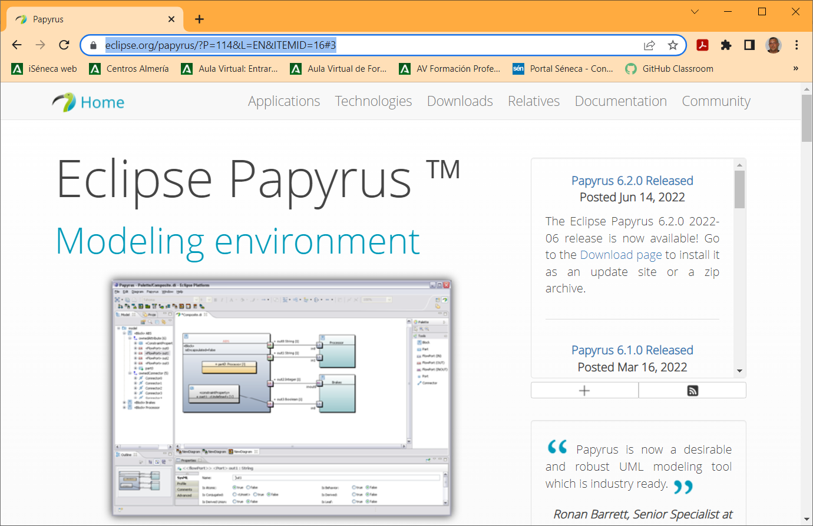
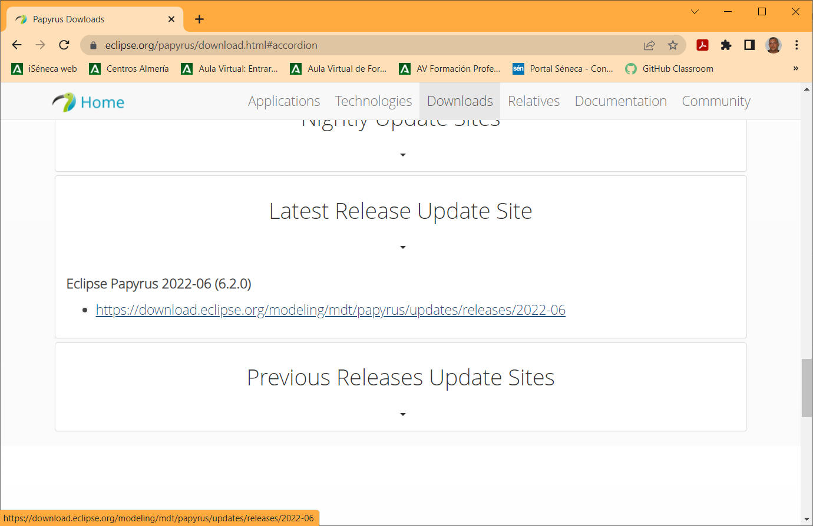
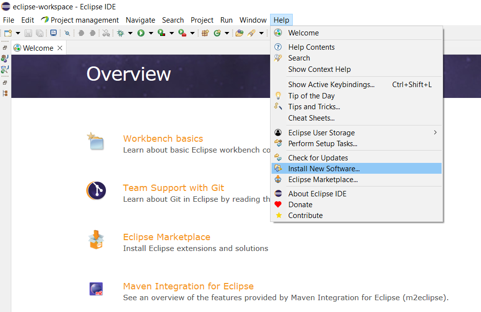
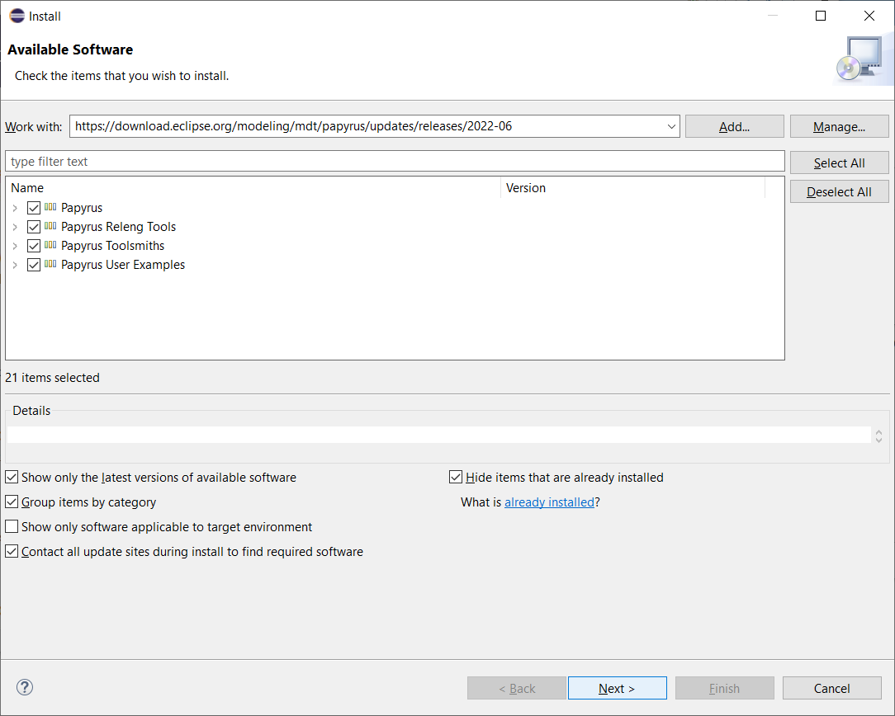

5.3.- Plugin UML para Eclipse.
Papyrus es un proyecto de software libre que permite la integración de diagramas UML en Eclipse.
Para instalarlo, primero iremos a la Web de Papyrus, y seleccionaremos la última versión (en este caso la 6.2.0).




Copiamos la dirección URL de la página (en este caso https://download.eclipse.org/modeling/mdt/papyrus/updates/releases/2022-06). Abrimos Eclipse, y en el menú Help -> Install New Software..., introducimos la URL copiada, seleccionamos todas las opciones y pulsamos Next > dos veces, aceptamos y pulsamos Finish:




El software se instalará al terminar el proceso, podemos ver el progreso en la barra de estado.
Una vez descargado, se nos pedirá que confiemos en el software a instalar, ya que no está firmado, y que reiniciemos el IDE.
Para saber más
Puedes encontrar una guía de uso (en inglés en la siguiente dirección:
También puedes ver la siguiente presentación: